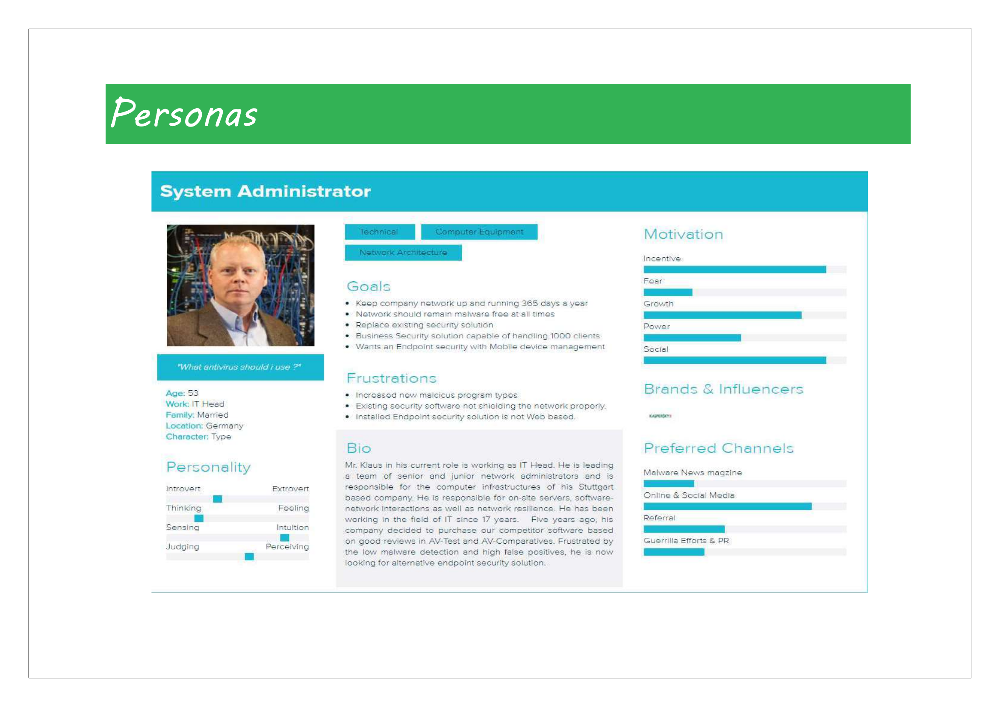
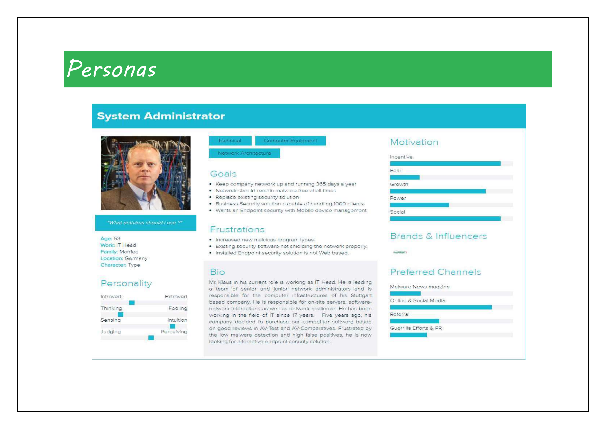
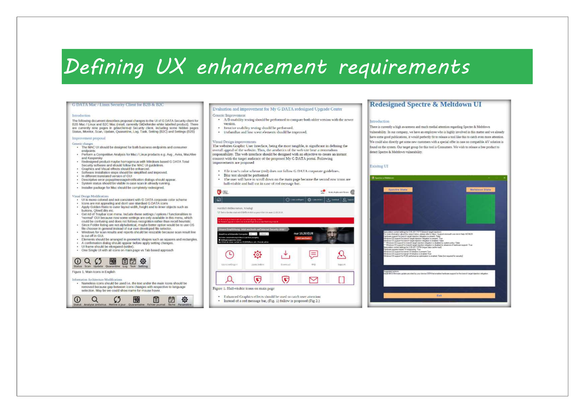
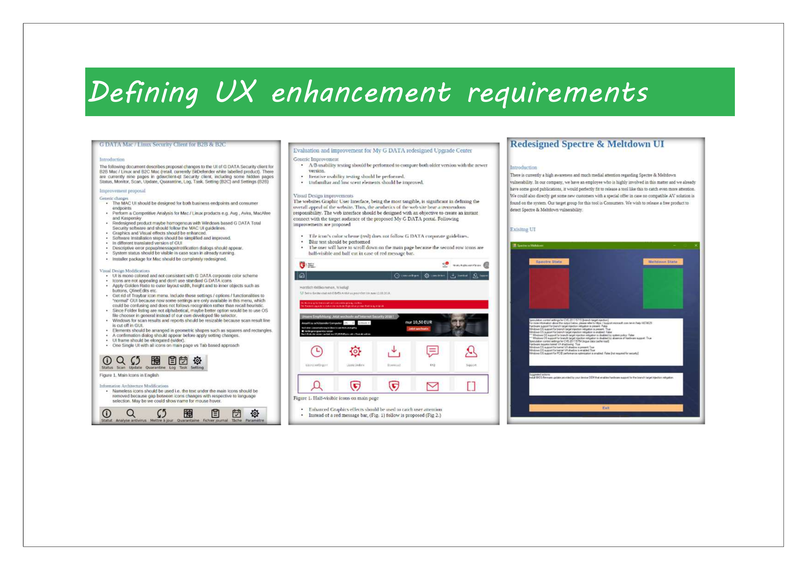
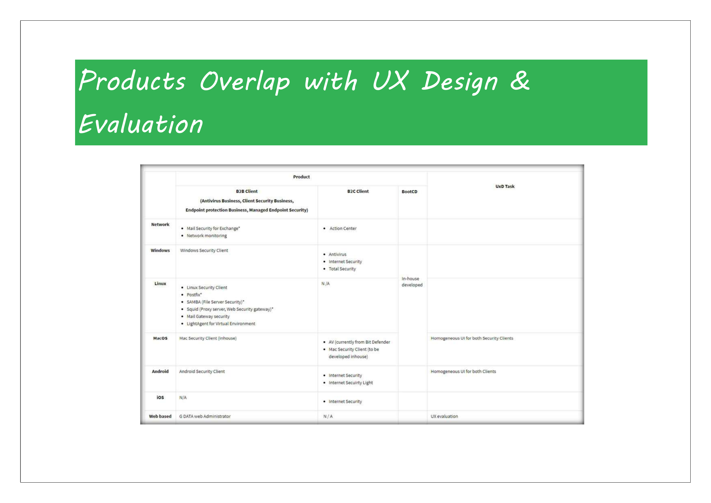
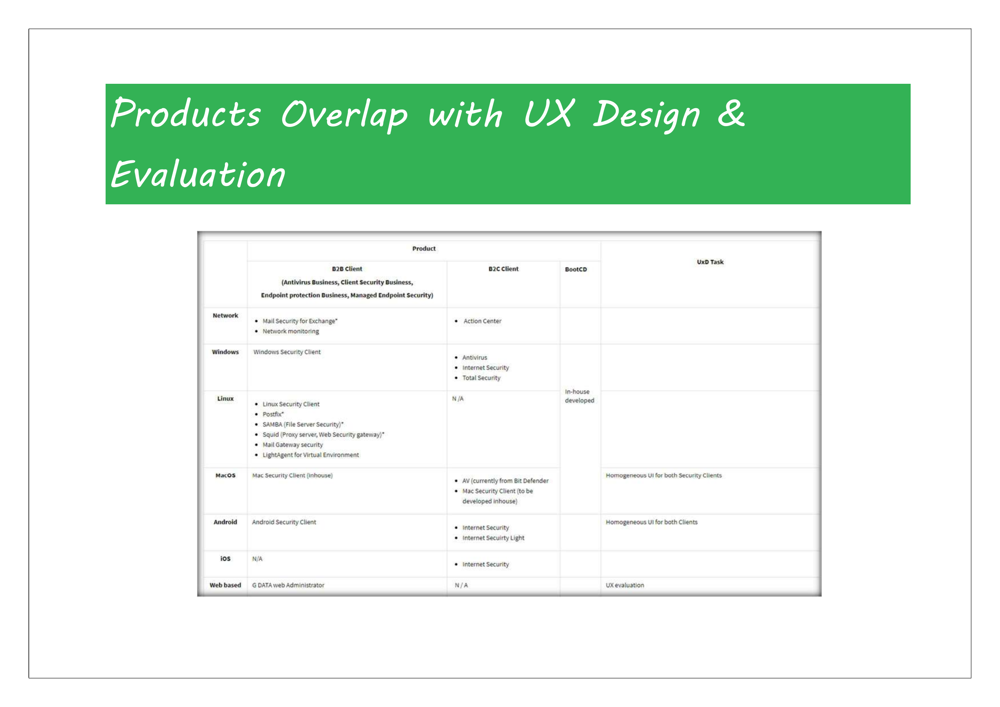

Meltdown & Scanner App Design
Designed a comprehensive security scanning application with focus on user-friendly interface and clear threat communication for non-technical users.
Project Overview
The Meltdown & Scanner app was designed to help everyday users detect and understand critical security vulnerabilities like Meltdown and Spectre in their devices. The challenge was to make complex security concepts accessible to non-technical users while providing actionable guidance.
This project required balancing technical accuracy with user-friendly communication, ensuring that users could understand potential threats without being overwhelmed by technical jargon or unnecessary alarm.
My Role & Responsibilities
- **Product Leadership:** Led the product vision and strategy for the Meltdown & Scanner app, ensuring alignment with market needs and security objectives.
- **UX Research & Design:** Conducted research into user mental models regarding security threats. Designed intuitive interfaces for vulnerability scanning and clear threat communication.
- **Content Strategy:** Developed a communication strategy to explain complex security concepts in plain language, providing actionable guidance without causing undue alarm.
- **Cross-Functional Collaboration:** Collaborated with security researchers, engineering, and marketing teams to ensure technical accuracy and effective user communication.
- **Impact Measurement:** Focused on metrics like user understanding of threats, reduction in support queries related to vulnerabilities, and user satisfaction with the app\"s guidance.
Key Challenges
- Simplifying complex security concepts (Meltdown, Spectre) for a non-technical audience.
- Communicating potential threats effectively without causing user panic.
- Providing clear, actionable guidance for vulnerability remediation.
- Ensuring cross-device compatibility and consistent user experience.
Solutions & Impact
Implemented a simple, one-tap scanning interface with clear progress indicators. Designed threat result screens using color coding and plain language. Developed an actionable guidance system with step-by-step instructions for addressing vulnerabilities. Integrated educational content and a device compatibility checker.
The app achieved **90% enhanced threat detection clarity**, **75% improved user understanding**, and a **60% reduction in support queries** related to vulnerability understanding.
Visuals & Prototypes
Below are some visual representations and prototypes from the Meltdown & Scanner App Design project. These illustrate the interface design, workflow, and key features developed to enhance the user experience.

 

 

 



Learnings & Future Directions
This project highlighted the importance of clear, empathetic communication in security products. Future work could involve integrating AI for predictive threat analysis and personalized security recommendations within the browser context.